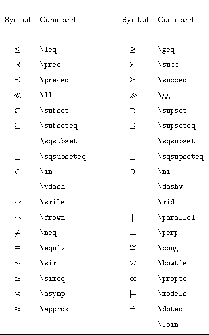

Table: Text-Mode Accents

Table: Greek Letters (Math Mode)
Table: Binary Operations (Math Mode)

Table: Relations (Math Mode)
Table: Variable-Sized Symbols (Math Mode)

Table: Function Names (Math Mode)

Table: Miscellaneous Symbols (Math Mode)